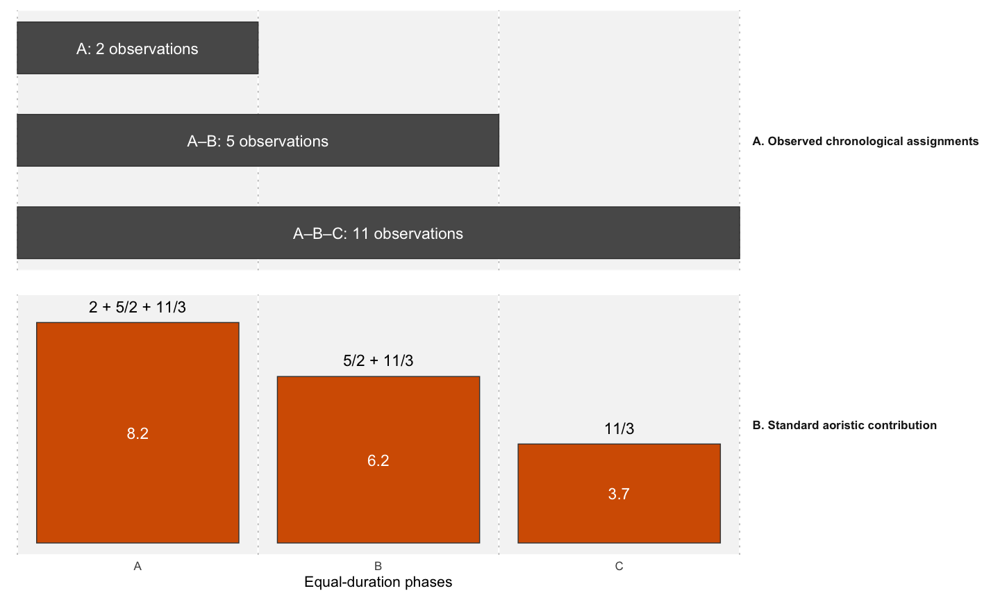
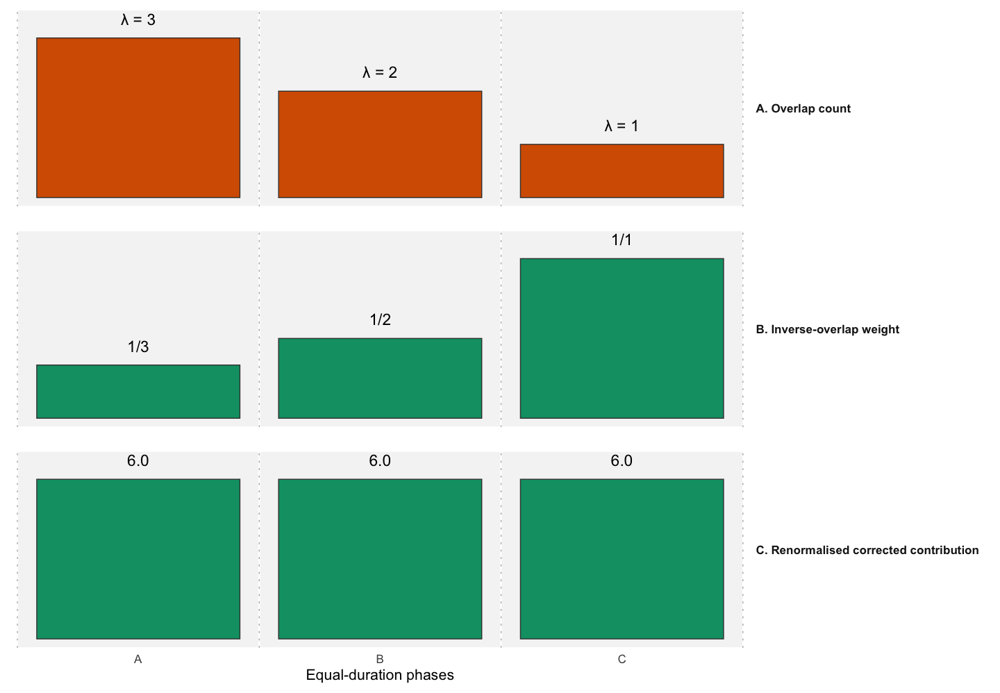
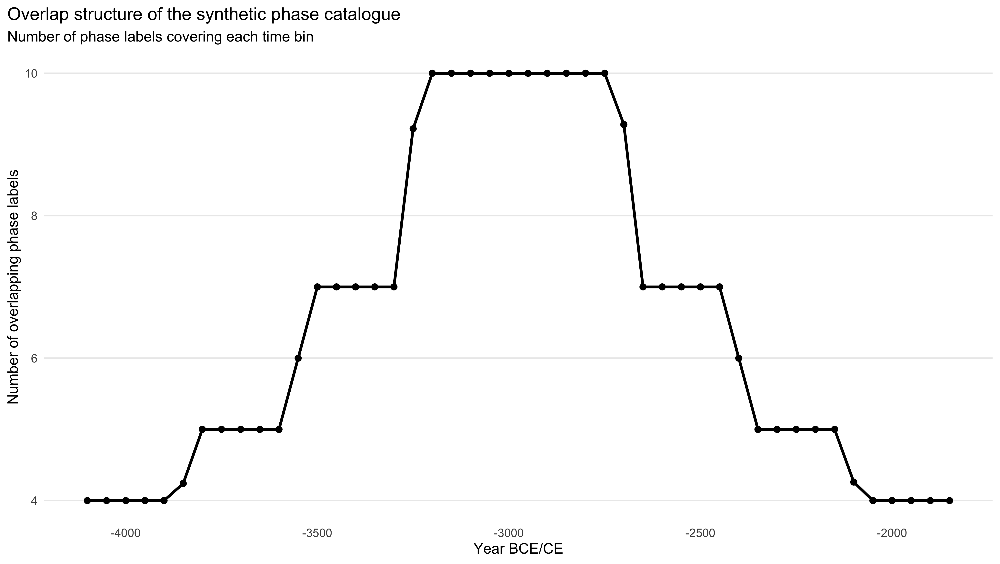
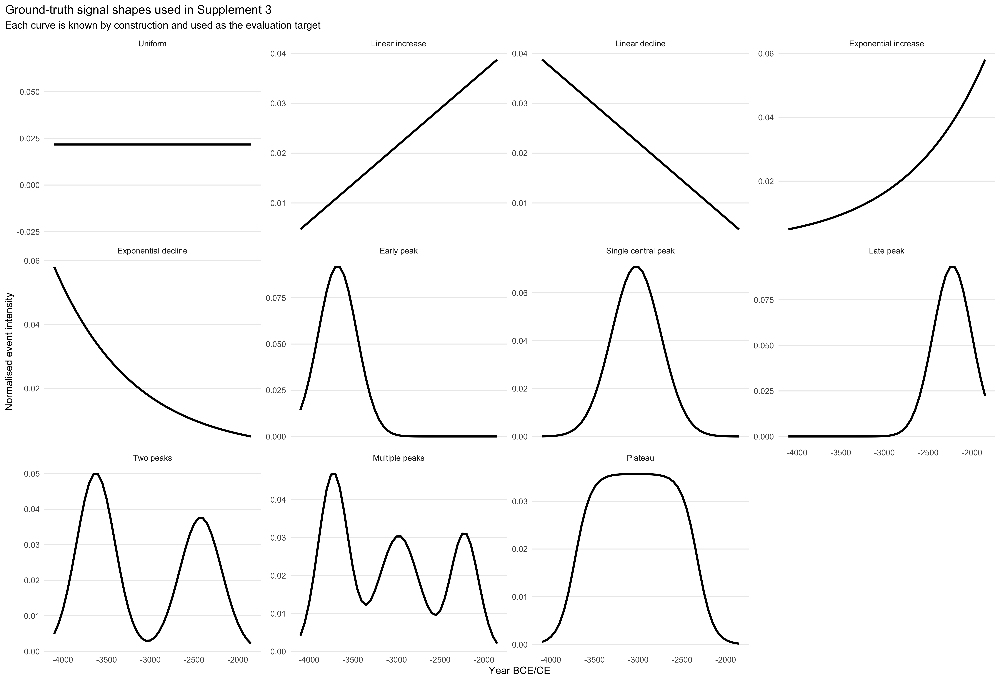
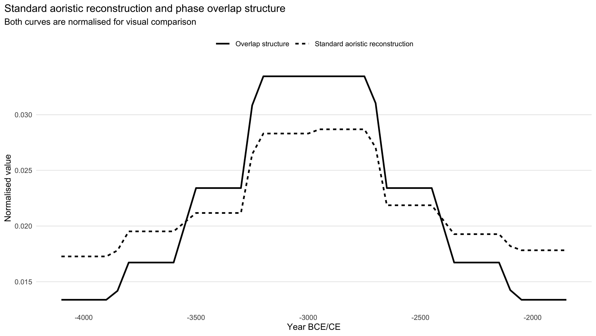
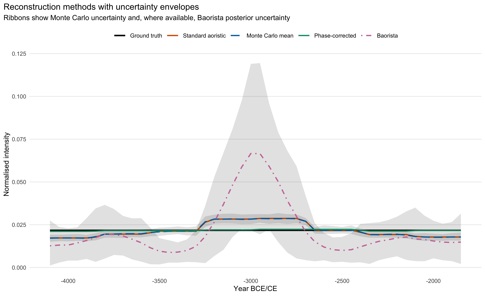
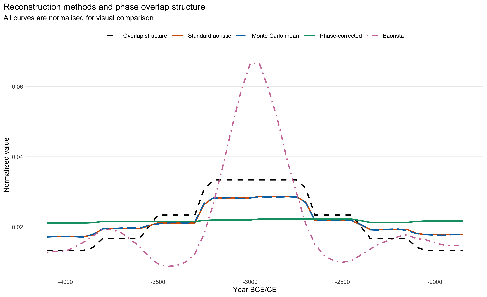
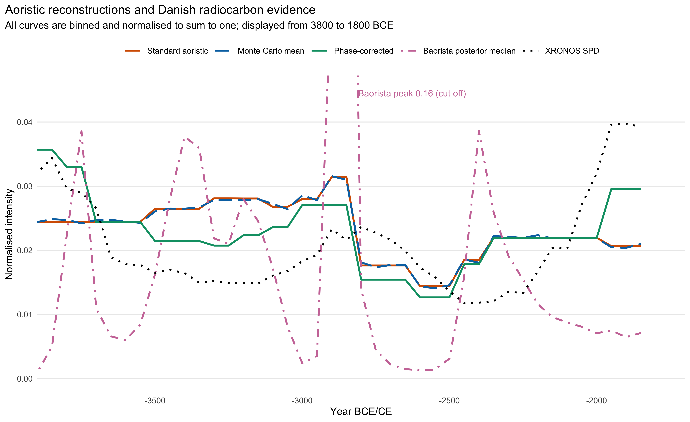
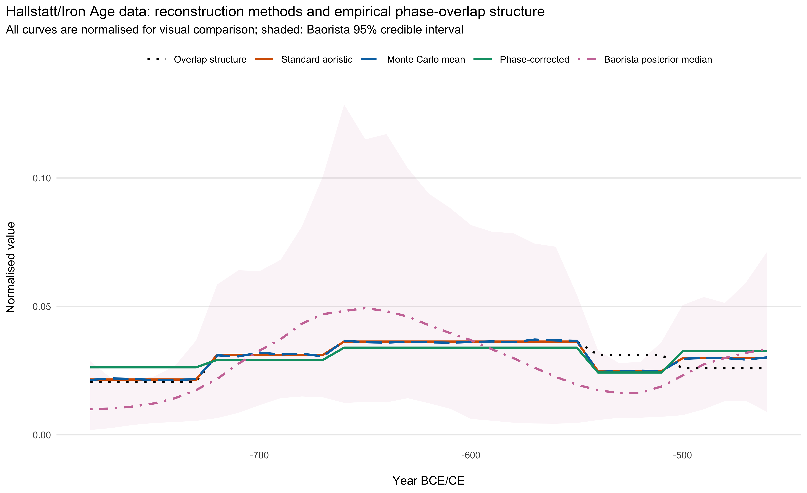

![]()

Systematic bias from overlapping temporal classifications requires correction in aoristic reconstructions
Abstract
Aoristic analysis is widely used in archaeology to aggregate observations dated to typological phases instead of calendar years. The standard approach and its Monte Carlo variants spread each observation uniformly over its time interval and thus treat time intervals as neutral containers of chronological uncertainty. We show that this assumption fails when observations are assigned to overlapping, hierarchical phase catalogues. In simulations with a uniform event process, the standard aoristic sum reproduces the overlap structure of the catalogue almost exactly, whatever the sample size, and neither Monte Carlo aoristics nor a Bayesian reconstruction removes this bias. The reason is that archaeological dates are not coarsened at random, since the label an observation receives depends on its date. From a simple model in which an event is equally likely to receive any label covering its date, we derive a phase-corrected weighting that needs no further data. It reduces the reconstruction error by about an order of magnitude, remains effective under other assignment models and performs at least as well as the standard approach for most non-uniform signals, although it dampens real peaks where these coincide with the overlap geometry. Applied to Danish Neolithic settlement records and to Early Iron Age burials from southern Germany, it largely removes the coupling to the interval structure. In the Danish data it tends to move the reconstruction towards an independent radiocarbon record, and in the Iron Age data it suggests that one phase was shorter than its conventional dating assumes. As site databases are increasingly used for large-scale demographic inference, the chronological classification has to be treated as part of the data.
Keywords
aoristic analysis; chronological uncertainty; archaeological phases; temporal frequency analysis; coarse data
1. Introduction
Archaeological research increasingly relies on large datasets to address population dynamics, settlement intensity and long-term socio-ecological change (Kintigh et al. 2014; Kristiansen 2014). Summed probability distributions of radiocarbon dates (e.g. Bird et al. 2022; Hinz et al. 2012b; Roe et al. 2025) are widely used as proxies for past activity and population size (e.g. Hinz et al. 2012a; Riede 2009; Timpson et al. 2014), and their sensitivity to calibration effects, sample selection and research history (Contreras and Meadows 2014; Torfing 2015; Williams 2012) has led to simulation-based workflows (Bevan, Crema and Silva 2018; Hinz et al. 2018).
A large part of the archaeological record, however, is not directly dated. Sites, finds, graves and features are assigned to typological, cultural or chronological phases, and because radiocarbon and other absolute dates are unevenly available, such phase-dated evidence is often the only basis for large-scale temporal frequency analysis (Contreras and Meadows 2014; Kolář et al. 2016). Regional and national site databases make it available in large quantities (Cooper and Green 2016; Lawrence, Palmisano and de Gruchy 2021; Palmisano, Bevan and Shennan 2017). It is usually aggregated by aoristic analysis (Johnson 2004; Mischka 2004; Ratcliffe 2000; Ratcliffe and McCullagh 1998), which distributes each observation uniformly over its interval and sums these probabilities, or by Monte Carlo variants that draw possible dates from the same intervals (Crema 2012; Crema, Bevan and Lake 2010; Kolář et al. 2016).
Aoristic analysis can be understood as implicit temporal imputation, which distributes unknown event dates over the years compatible with the chronological information. The same imputation, under other names, has long been used to quantify pottery and other artefacts dated by type (Baxter and Cool 2016; Fentress and Perkins 1988). Such imputations are sensitive to assumptions about the process that produced the coarsening (Heitjan and Rubin 1990). In archaeology this process is a classification. Phase intervals are not rounded measurements but categories of hierarchical and overlapping schemes, and whether an observation receives a narrow or a broad label depends on diagnostic artefacts, preservation, research history and the state of chronological knowledge. Standard aoristic reconstruction can therefore inherit structure from the classification system, and structurally induced peaks may be mistaken for demographic or settlement processes. Effects of periodisation on such time series have been noted before (Bevan and Crema 2021). Here we isolate one mechanism, the overlap of phase labels, and derive a correction for it.
The paper makes three contributions. First, we show that overlapping phase catalogues produce systematic and predictable distortions in aoristic reconstructions, because the label an observation receives depends on its true date. The coarsening is thus not random in the statistical sense, which explains why the distortions persist in Monte Carlo and Bayesian variants that treat the intervals as neutral bounds. Second, we derive the phase-corrected weighting implemented in our R package aoristAAR from an explicit model of how overlapping labels are assigned. It gives the posterior distribution of each event date under this model and needs no information beyond the observed intervals. Third, we test the correction under uniform and non-uniform signals, under alternative assignment models and on two empirical datasets, Danish Neolithic settlements and Early Iron Age burials from southern Germany, and we provide diagnostics that show whether a reconstruction is affected and whether the assumptions of the correction hold.
2. Conceptual background
2.1 Aoristic analysis and temporal uncertainty
Aoristic analysis aggregates observations that can only be assigned to a chronological interval into a temporal frequency distribution (Johnson 2004; Ratcliffe 2000; Ratcliffe and McCullagh 1998). Let each observation \(i\) be assigned to an interval \(I_i\), and let \(t\) denote a discrete time unit. In the standard proportional approach, the contribution of observation \(i\) to time unit \(t\) is
\[ p_i(t) = \begin{cases} \frac{1}{|I_i|}, & \text{if } t \in I_i, \\ 0, & \text{otherwise,} \end{cases} \]
where \(|I_i|\) is the duration of the interval, and the aoristic sum is
\[ A(t) = \sum_{i=1}^{n} p_i(t). \]
An observation with a long interval contributes a little to many time units, one with a short interval much to few. The underlying assumption, that every time unit within the assigned interval is equally likely, follows the “principle of insufficient reason” and provides a simple and explicit expectation (Crema 2025). Non-uniform alternatives have been proposed (Baxter and Cool 2016) but are rarely used, and the bias discussed below does not depend on this choice.
Monte Carlo aoristics repeatedly draws event dates uniformly from the assigned intervals and summarises the resulting curves. The mean of these curves converges on the standard aoristic sum, so the simulation represents uncertainty around that expectation but does not correct it where it is biased. A Bayesian alternative that models the latent temporal distribution explicitly has recently been proposed (Crema 2025), and we use it as a model-based benchmark (Section 3.2).
2.2 Overlapping phase catalogues
Archaeological phase systems are often hierarchical and overlapping. A single scheme may contain broad periods, narrower phases, local subphases and cross-cutting typological categories, so that some observations are dated to a narrow interval and others to a broader one that overlaps several more specific phases. In empirical datasets, a few broad intervals often account for a large share of the observations and overlap unevenly across the study period (Section 4.4). In what follows, a label is a category of such a scheme, its interval is the time span it covers, and the catalogue is the set of labels in use.
A minimal example illustrates the mechanism (Figure 1). Consider three successive phases, \(A\), \(B\) and \(C\), of equal duration, and a catalogue with only three labels, \(A\), \(A\)–\(B\) and \(A\)–\(B\)–\(C\). Suppose that six events fall into each phase and that every event receives, with equal probability, one of the labels covering its date. The six events in \(A\) are then shared among three labels, those in \(B\) among two, and those in \(C\) all receive \(A\)–\(B\)–\(C\), so that the three labels are used 2, 5 and 11 times.
Under standard proportional aoristics, phase \(A\) receives \(2 + \frac{5}{2} + \frac{11}{3} \approx 8.2\), phase \(B\) receives \(\frac{5}{2} + \frac{11}{3} \approx 6.2\), and phase \(C\) only \(\frac{11}{3} \approx 3.7\), although all three contain the same number of events. A narrow label places all its observations in the phase it covers. A broad label, by contrast, collects its observations mainly from those parts of its interval that few other labels cover, here \(A\)–\(B\)–\(C\) from phase \(C\), but the standard method spreads them evenly over the whole interval. It thus shifts weight towards the parts of the sequence where many labels overlap. The problem is not chronological uncertainty as such but its structuring by the catalogue used to describe it.
2.3 Phase-corrected aoristic weighting
To address this mechanism, we use a phase-corrected weighting, implemented as period_correction in our R package aoristAAR (Hinz, Müller-Scheeßel and Schmid 2026). For each time unit \(t\), we first count the unique observed intervals covering it, the overlap count
\[ \lambda(t) = \sum_{j=1}^{m} \mathbf{1}(t \in J_j), \]
where \(J_1, \ldots, J_m\) are the unique observed intervals and \(\mathbf{1}(\cdot)\) is the indicator function. Each observation is then distributed within its interval in proportion to the inverse of this count,
\[ p_i^{*}(t) = \begin{cases} \frac{\lambda(t)^{-1}}{\sum_{u \in I_i} \lambda(u)^{-1}}, & \text{if } t \in I_i, \\ 0, & \text{otherwise,} \end{cases} \]
so that its total contribution remains one, and the corrected sum is \(A^{*}(t) = \sum_{i} p_i^{*}(t)\). Years covered by many overlapping labels receive less weight within each interval, years covered by few labels more. In the example, \(\lambda\) is 3, 2 and 1 for phases \(A\), \(B\) and \(C\), and the corrected sum recovers the six events per phase exactly (Figure 2).
The weighting has a simple probabilistic interpretation. Suppose that an event dated to \(t\) is attributed to any one of the \(\lambda(t)\) labels covering \(t\) with equal probability, \(P(J_j \mid t) = \lambda(t)^{-1}\). With a flat prior on \(t\), the posterior distribution of the date of an observation carrying label \(J_j\) is then proportional to \(\lambda(t)^{-1}\) within \(J_j\), which is the phase-corrected weight \(p_i^{*}(t)\). Standard proportional aoristics, by contrast, implicitly assumes that the observations are coarsened at random, i.e. that the probability of observing a particular interval does not depend on where within it the true value lies. Only under this assumption can the coarsening process be ignored in inference (Heitjan and Rubin 1990). Under the assignment model above it does not hold, because the probability of a label depends on the true date through \(\lambda(t)\). This also affects likelihood-based reconstructions that treat the observed intervals as censoring bounds (Section 5.1). The phase correction follows from the simplest model of label assignment and rests on two assumptions, a flat prior within each interval and label assignment that is indifferent between all compatible labels. In applications, \(\lambda(t)\) is counted over the intervals that occur in the data, so that the equivalence with the posterior is exact in expectation and approximate in any finite sample.

The correction is not a full model of the archaeological dating process, but it can be applied to any existing aoristic analysis without additional data.
3. Materials and methods
3.1 Simulation design
The simulations use a synthetic phase catalogue in which broad periods, intermediate phases, short subphases and cross-cutting diagnostic labels refer to partly overlapping sections of the same chronology (Figure 3). Its time window, 4100 to 1800 BCE, matches the Danish case study, and curves are evaluated in 50-year bins. The catalogue was constructed so that its overlap structure is easy to see, but the overlap-aligned amplitude it produces (Section 3.3) is of the same order as in the Danish data (18.6% and 21.3% of the mean density, Section 4.4). Counting the labels that cover each year yields the overlap curve, which describes the geometry of the catalogue and contains no information on event intensity.


In each simulation, true event dates are drawn first and each event is then assigned to one randomly selected label compatible with its date. The reconstruction methods see only these intervals. This is the simplest observation model and the one under which the phase correction is exact in expectation (Section 2.3). It contains no preservation, recovery or research bias, so any structure in a reconstruction of a uniform process must arise from the interaction of assignment and reconstruction.
The first scenario uses a uniform event process with 10,000 events (Supplements 1 and 2). Ten non-uniform signals, from monotonic and exponential trends to single, double and multiple peaks and a plateau, are simulated in 100 runs of 1,000 events each (Figure 4, Supplement 3). Finally, all eleven signals are simulated under three alternative assignment rules, with a preference for narrow labels, a preference for broad labels and fixed propensities per hierarchical level (Supplement 6).

3.2 Reconstruction methods
We compare three aoristic reconstructions, all applied to the same intervals and calculated on the same grid: the standard proportional reconstruction (Section 2.1), the Monte Carlo reconstruction, which samples one date per observation from its interval in each of 100 iterations and is summarised by its mean and envelope, and the phase-corrected reconstruction (Section 2.3). All curves are normalised to the same total, so that differences reflect their shape and not their mass.
As a model-based benchmark we use the Bayesian reconstruction introduced in Section 2.1, as implemented in the R package baorista (Crema 2025). It estimates the probability of events per 50-year block under an intrinsic conditional autoregressive (ICAR) prior, and we use the posterior median per block as its point estimate. Models were fitted with NIMBLE (de Valpine et al. 2017), using four chains and an exponential prior with rate 1 on the ICAR scale parameter. Its influence was tested with rates of 10, 50 and 100 for the uniform simulation and both empirical datasets (Supplements 2, 4 and 5), and additionally with a rate of 1000 for the uniform simulation. Fits with a Gelman–Rubin \(\hat R\) above 1.05 (Gelman and Rubin 1992) were refitted with more iterations. All fits met this criterion except two example-run fits in Supplement 3 (early and late peak, \(\hat R \approx 1.12\)) and the Danish fits with prior rates 1 and 10 (\(\hat R\) = 1.08 and 1.05), which are reported but flagged. The peak discussed in Section 5.1 also appears in the converged fits. All settings and convergence diagnostics are given in the supplements.
3.3 Evaluation criteria
Where the ground truth is known, accuracy is measured by the root-mean-square deviation (RMSD) between the reconstructed curve \(R(t)\) and the true curve \(G(t)\), both normalised to the same total and evaluated over all 50-year bins, and by their correlation, which captures similarity in shape and is undefined for a uniform ground truth.
In addition to accuracy, we calculate diagnostics of phase-overlap coupling. As in Section 2.3, \(\lambda(t)\) denotes the overlap structure of the phase catalogue, the number of intervals covering time unit \(t\), counted over the labels of the synthetic catalogue in the simulations and over the unique observed intervals in the empirical applications. A high correlation between the reconstructed curve and the overlap structure, \(\text{cor}(R, \lambda)\), indicates that the reconstructed temporal pattern may be shaped by the classification system.
Correlation measures whether a reconstruction has the shape of the overlap curve, but not how strongly it follows it. A nearly flat curve with a small ripple shaped like \(\lambda(t)\) can correlate highly with it. We therefore complement the correlation with two magnitude-based measures. Where ground truth is known, the overlap-attributable RMSD,
\[ \text{RMSD}_\lambda = |\text{cor}(E, \lambda)| \cdot \text{sd}(E), \qquad E(t) = R(t) - G(t), \]
is the root-mean-square size of the part of the reconstruction error \(E\) that varies linearly with the overlap curve, on the same scale as the RMSD. For all reconstructions, the overlap-aligned relative amplitude,
\[ A_\lambda = \frac{|\beta| \cdot \text{sd}(\lambda(t))}{\bar R}, \]
with \(\beta\) the slope of \(R(t)\) on \(\lambda(t)\), gives the change in reconstructed density, as a percentage of the mean density, per standard deviation of overlap. With all curves normalised to the same total over \(T\) = 46 bins, the mean bin density is \(1/T\), and we report RMSD and \(\text{RMSD}_\lambda\) relative to it as well, i.e. as \(100\,T \cdot \text{RMSD}\) in per cent. Under a uniform ground truth, \(\text{RMSD}_\lambda\) and \(A_\lambda\) take the same value, and \(A_\lambda\) is therefore used mainly for the empirical data.
Without ground truth, the evaluation of the empirical case studies focuses on the coupling between each reconstruction and the empirical overlap structure and, for the Danish data, on the agreement with an independent summed radiocarbon distribution, which serves as an external proxy and not as a target curve.
3.4 Danish Neolithic settlement data
The Danish case study is not meant as a demographic history of Neolithic Denmark but as a test of how strongly an empirical reconstruction depends on the structure of its chronological catalogue. It uses 3,493 Neolithic settlement records from the Danish national register Fund og Fortidsminder (Slots- og Kulturstyrelsen 2018), with dating intervals clipped to the window from 4100 to 1800 BCE. The 43 records dated freely, for example by a radiocarbon range, were assigned to the best-matching period of the register’s list, so that the catalogue comprises 63 unique intervals (Supplement 4). For the Bayesian benchmark, Baorista is fitted to the same records under four exponential priors for the ICAR scale parameter, with rates of 1, 10, 50 and 100 (Supplement 4).
As an independent comparison, we use a summed probability distribution (SPD) of radiocarbon dates from XRONOS (Roe et al. 2025). The Danish extraction contains 9,816 records, reduced to 996 settlement-related determinations after filtering and deduplication, which were calibrated with IntCal20 (Reimer et al. 2020) and summed with rcarbon (Crema and Bevan 2021), binned by site. The SPD has its own biases, from sampling intensity and research history to calibration effects, and its value as a population proxy for the Danish Neolithic is itself debated (Torfing 2015, 2016). Its biases are, however, not those of the phase system, so it serves for triangulation and not as ground truth.
3.5 Early Iron Age burials in southwestern and southern Germany
The second application uses Early Iron Age burials from southwestern and southern Germany, the so-called Hallstatt period, which is conventionally dated to about 780–450 BCE. Its absolute chronology rests mainly on dendrochronology and on Mediterranean imports of known date (Müller-Scheeßel 2013: 18–20; for an overview see Rose et al. 2022). Radiocarbon dates are of little help because of the Hallstatt plateau in the calibration curve (but see Rose et al. 2022), so that, unlike in the Danish case, no independent record is available.
The relative chronology, by contrast, is fine-grained. The burials are often richly furnished with pottery and with bronze and iron objects (Müller-Scheeßel 2013), and the brooches (fibulae) of the later Hallstatt period in particular allow graves to be dated to phases estimated to have lasted only a few decades. The currently accepted scheme divides the earlier Hallstatt period into two phases (HaC1, HaC2) and the later into three (HaD1, HaD2, HaD3). Not every grave can be dated this precisely, however, and many can only be assigned to several adjacent phases or to a period as a whole. The catalogue combines short phases with broader, overlapping intervals.
The data come from a database of more than 2,000 graves excavated over the past 90 years, originally compiled for a study of changing burial customs in the Hallstatt period (Müller-Scheeßel 2013). Each grave was assigned to one or more Hallstatt periods or phases on the basis of its grave goods and, where graves intersect, its stratigraphic position. In that study, graves assigned to more than one phase were divided equally among these phases, as the methodological problems involved had not yet been recognised.
4. Results
4.1 Standard aoristics under uniform ground truth
Under a uniform ground truth, any systematic temporal structure in the reconstruction must come from the observation and reconstruction procedure. The standard proportional reconstruction is nevertheless clearly structured (Figure 5), and this structure closely follows the overlap curve of the synthetic catalogue, with a correlation of 0.987 (Supplement 1). The reconstruction is shifted upwards where many labels overlap and downwards where few are available, with an RMSD of 18.8% of the mean density against the uniform truth. Here the standard aoristic curve reproduces the structure of the classification.


4.2 Phase correction in the uniform case
The Monte Carlo mean behaves almost identically to the standard reconstruction (Figure 6, Table 1), as expected from their shared within-interval uniformity assumption. The phase-corrected reconstruction, by contrast, is much closer to the uniform truth (Supplement 2), with an RMSD of 1.8% of the mean density, compared with 18.8% for the standard reconstruction. With 10,000 events, the correction reduces the error by about an order of magnitude. Under the assignment rule used here, the correction is in expectation the exact flat-prior posterior (Section 2.3), so the remaining error is sampling noise. The error of the standard reconstruction, by contrast, does not diminish with sample size (17.8%, 18.8% and 17.4% with 1,000 and 10,000 events and in the infinite-sample limit, Supplements 3 and 6), whereas that of the correction falls from 4.4% to 1.8% and vanishes in the limit. The bias is systematic and can only be removed by an explicit correction, whatever the inferential framework. Whether the correction remains accurate under other assignment rules is examined in Section 4.3.


| Method | RMSD (% of mean density) | \(\text{cor}(R, \lambda)\) | \(\text{RMSD}_\lambda\) (% of mean density) |
|---|---|---|---|
| Standard proportional aoristic | 18.8% | 0.987 | 18.6% |
| Monte Carlo mean | 18.8% | 0.987 | 18.5% |
| Phase-corrected aoristic | 1.8% | 0.765 | 1.4% |
| Baorista | 71.8% | 0.703 | 50.5% |
The overlap diagnostics show why magnitude matters. The correlation with the overlap curve falls only from 0.987 to 0.765, because the shared sampling noise of each interval leaves a faint trace of the overlap shape, but the overlap-attributable RMSD shrinks from 18.6% to 1.4% of the mean density. Baorista shows the opposite case. Its correlation with the overlap curve is lower (0.703), but its overlap-attributable RMSD is larger (50.5%) and its RMSD is 3.8 times that of the standard reconstruction. Its posterior concentrates probability in the centre of the window, where most labels overlap, as expected for likelihood-based inference on interval data (Section 5.1).
4.3 Phase correction under non-uniform signals
In the non-uniform simulations (Supplement 3), each of the eleven signals was simulated in 100 runs, and in each run the three aoristic reconstructions were compared by their RMSD against the true curve (Table 2). The phase correction comes closest to the truth in every run for the uniform, monotonic, exponential and two-peaked signals, with clear reductions of the median RMSD. For the early, late and multiple peaks it is best in most runs, but only by a few per cent. For the single central peak and the plateau it is best in none, and the standard and Monte Carlo reconstructions share the runs between them. Here the true concentration of events coincides with the region of high overlap, and the correction removes part of the real signal together with the bias. In these two cases, the correction also increases the overlap-attributable RMSD, whereas in all others it reduces it, often by more than the RMSD as a whole.
| Signal pattern | Best method by RMSD | Share of runs | RMSD ratio |
|---|---|---|---|
| Uniform | Phase-corrected | 1.00 | 0.25 |
| Linear increase | Phase-corrected | 1.00 | 0.65 |
| Linear decline | Phase-corrected | 1.00 | 0.64 |
| Exponential increase | Phase-corrected | 1.00 | 0.69 |
| Exponential decline | Phase-corrected | 1.00 | 0.69 |
| Early peak | Phase-corrected | 0.99 | 0.97 |
| Late peak | Phase-corrected | 0.93 | 0.97 |
| Two peaks | Phase-corrected | 1.00 | 0.86 |
| Multi-peak | Phase-corrected | 0.88 | 0.97 |
| Single central peak | Standard / Monte Carlo | 0.54 / 0.46 | 1.33 |
| Plateau | Standard / Monte Carlo | 0.54 / 0.46 | 1.22 |
The same pattern holds when labels are assigned with a preference for narrow labels, broad labels or particular hierarchical levels (Supplement 6). For the uniform signal, the correction then still removes 77–89% of the systematic error of the standard reconstruction, and a reconstruction that knows the true assignment probabilities is only marginally better in most scenarios.
4.4 Danish Neolithic settlement data
The 3,493 Danish settlement records are distributed across 63 unique intervals with a median width of 1,150 years. Their widths range from 100 to 2,150 years, so that dating precision varies by more than a factor of forty. The distribution is also highly concentrated. 3950–1800 BCE and 3950–2800 BCE alone account for 57.4% of all observations, and the three most frequent intervals for 69.0%. Equal choice among the labels covering each date would give the two most frequent periods only about 11.9% (Supplement 6). The key assumption of the correction is thus violated in these data (Section 5.2).
The standard and Monte Carlo reconstructions are almost identical (correlation 0.999), whereas the phase-corrected reconstruction differs markedly from both (0.786 with the standard curve, Figure 7). The standard and Monte Carlo reconstructions remain coupled to the empirical overlap structure, with correlations of 0.661 and 0.656 (Table 3). The correction reduces this coupling to 0.158, and the overlap-aligned amplitude falls from 21.3% to 5.8% of the mean density.

| Method | \(\text{cor}(R, \lambda)\) | \(A_\lambda\) (% of mean density) | Correlation with XRONOS SPD |
|---|---|---|---|
| Standard proportional aoristic | 0.661 | 21.3% | −0.050 |
| Monte Carlo mean | 0.656 | 21.1% | −0.046 |
| Phase-corrected aoristic | 0.158 | 5.8% | 0.645 |
| Baorista (posterior median) | 0.319 | 47.7% | −0.132 |
Within the common Neolithic window, which excludes the late Mesolithic part of the SPD, the standard and Monte Carlo reconstructions are essentially uncorrelated with the SPD of the 996 XRONOS settlement dates (Section 3.4, r = −0.050 and −0.046), whereas the phase-corrected reconstruction correlates positively (r = 0.645, Figure 8). Tested against surrogate SPDs with the same autocorrelation as the observed one (Supplement 4), no reconstruction agrees with the SPD beyond chance, but the difference between the corrected and the standard reconstruction is less easily explained by chance (p = 0.084 in the common window and 0.027 over the full analytical window). The correction thus moves the reconstruction towards the radiocarbon evidence, but the support for this is moderate rather than conclusive. The comparison also shows local offsets between the curves, which point to the absolute length and placement of individual phases as a separate source of error that the overlap diagnostic does not capture.

4.5 Early Iron Age burials
Without an independent record (Section 3.5), the Hallstatt data show how strongly the phase structure of a compact chronology with short phases shapes the reconstruction.
The 2,242 graves (Supplement 5) are distributed across 13 unique intervals with a median width of 120 years. Their widths range from 40 to 330 years, so that dating precision varies only by a factor of about eight. Label use also deviates far less from the key assumption of the correction than in the Danish data. The most frequent label is the phase HaD1 (660–540 BCE) with 21.8% of all graves, followed by the Hallstatt period as a whole with 16.6%. Together they account for 38.4%, and the three most frequent labels for 51.8%. Equal choice among the labels covering each date would give the two most frequent labels about 32.8% (Supplement 6).
The standard and Monte Carlo reconstructions are again almost identical (correlation 0.998), and the phase-corrected reconstruction differs from both (0.894 with the standard curve, Figure 9). Over most of the sequence the standard reconstruction follows the overlap curve almost step by step, with a correlation of 0.887 (Monte Carlo mean 0.885, Table 4). The correction reduces this coupling to 0.610 and the overlap-aligned amplitude from 16.3% to 7.3% of the mean density, mainly by levelling the differences between the earlier Hallstatt phases. Fitted to the Hallstatt data with the same settings as in Section 4.4, Baorista correlates less closely with the overlap curve than the standard reconstruction (0.650) but has the largest overlap-aligned amplitude (27.8%), with a maximum at the beginning of HaD1, where most labels overlap (Supplement 5).
The exception is the late Hallstatt period. Between 540 and 501 BCE, the span of HaD2, all three reconstructions lie well below the overlap curve, and between 500 and 451 BCE, the span of HaD3, above it. Since this deviation is not produced by the overlap structure and persists after the correction, it reflects the number of graves assigned to these phases. HaD2 receives fewer graves than the catalogue alone would lead one to expect, and HaD3 more (Section 5.2).

| Method | \(\text{cor}(R, \lambda)\) | \(A_\lambda\) (% of mean density) |
|---|---|---|
| Standard proportional aoristic | 0.887 | 16.3% |
| Monte Carlo mean | 0.885 | 16.3% |
| Phase-corrected aoristic | 0.610 | 7.3% |
| Baorista (posterior median) | 0.650 | 27.8% |
5. Discussion
5.1 Uncertainty representation is not structural correction
The curve produced by aoristic reconstruction depends on the structure of the assigned intervals as much as on the observations. Where intervals derive from overlapping hierarchical phase catalogues, observations are assigned to different levels of the classification depending on diagnostic visibility, preservation, research history or recording practice, and the geometry of this classification propagates into the reconstructed curve.
Monte Carlo aoristics does not change this. It shows how much the curve can vary when event dates are sampled under the within-interval uniformity assumption, which is useful for visualising uncertainty, but its mean retains the expectation of the standard reconstruction, as the simulations and both empirical datasets show.
A model-based reconstruction such as Baorista poses temporal reconstruction explicitly as a probabilistic problem. In the uniform simulation, however, its posterior concentrates probability where many labels overlap, and its overlap-aligned component is larger than that of the standard reconstruction. The prior-sensitivity analysis of the Danish data shows that this is more than a less accurate estimator. Across exponential priors with rates from 1 to 100, the posterior retains a pronounced peak in the century before 2800 BCE (2900–2801 BCE), immediately before the end point of many of the most frequently repeated intervals (Supplement 4). In the Hallstatt data, where all fits converged, it likewise concentrates probability where most labels overlap (Section 4.5). This is the behaviour expected for interval-censored data, in which likelihood-based estimates concentrate probability mass on the intersections of the observed intervals (Turnbull 1976), and a smoothing prior attenuates this tendency but does not remove it. In the uniform simulation, a stronger prior lowers the peak only at a very high precision, and the curve then approaches the standard reconstruction (Supplement 2). Robustness to the prior and robustness to the chronological observations are therefore two different properties, and a sensitivity analysis over priors tests only the first. We do not regard this as a limitation of Bayesian inference as such, but as an indication that the overlap mechanism arises in the chronological observations, before any statistical reconstruction. The most direct remedy would be to replace the implicit coarsening-at-random likelihood with the assignment model of Section 2.3. With \(\theta_t\) the event probability in block \(t\), the likelihood of a label \(J\) then becomes \(\sum_{t \in J} \theta_t \lambda(t)^{-1}\) instead of \(\sum_{t \in J} \theta_t\), which would combine the phase correction with the smoothing prior and the posterior uncertainty of the Bayesian approach.
5.2 Using the phase correction in practice
The phase correction targets the overlap mechanism itself, but two limitations cannot be removed by careful use. Where the true signal itself resembles the overlap structure, as in the single-peak and plateau scenarios, the flat prior within each interval pulls genuine concentrations towards the parts covered by fewer labels (Section 2.3). And the correction cannot detect bias from an observation process that changes through time, for instance if chronological resolution differs systematically between periods. Since median phase lengths shorten markedly only from the Iron Age onwards (Siegmund 2012: 260), this should matter mainly in analyses spanning several epochs. The other assumptions can be checked in the data, and the correction is best used together with such checks rather than as a mechanical replacement of the standard method.
The first check concerns the catalogue. Because \(\lambda(t)\) counts distinct intervals and not how often they are used, splitting a phase into subphases, adding a rarely used label or keeping technical duplicates changes the weights of all observations covering the affected years. Labels with identical extent should therefore be merged, and ad hoc intervals such as radiocarbon ranges assigned to the best-matching period (Supplement 4).
The second concerns label use. Comparing the observed frequency of each label with that expected under equal choice shows whether the key assumption holds. If it does and the standard reconstruction is clearly coupled to the overlap curve, the corrected curve is the better founded estimate. This is largely the case in the Hallstatt data, where the correction kept most of its advantage in simulations on the observed catalogue (Supplement 6). If label use is strongly concentrated, as in the Danish data (Section 4.4), the effect of the correction depends on the signal. Declining trends still improved, but increasing trends, peaks and plateaus came out worse than with the standard method. Where the two reconstructions differ in a part of the sequence in which the true signal may plausibly be concentrated, neither can then be preferred on internal grounds.
Conspicuous features can also be tested against an envelope of what the catalogue alone would produce, obtained by assigning uniformly simulated events to the observed intervals. This follows the logic of null-model tests for summed radiocarbon distributions (Crema and Bevan 2021; Timpson et al. 2014), and Fentress and Perkins (1988: 207, n. 12) already used such a check for their pottery curves. Like the correction, however, it presupposes equal choice among labels.
Where the internal checks leave the question open, independent evidence has to decide. For the Danish data, the corrected curve moves towards the radiocarbon record, although no reconstruction agrees with it beyond chance. Local offsets between the curves call for a check of the absolute anchoring of individual phases, to which chronological schemes for the Danish Neolithic assign noticeably different lengths (Torfing 2016). The Hallstatt data point to the same problem. Between 540 and 501 BCE all reconstructions fall below the overlap curve, and in the following decades they rise above it (Section 4.5). Since this deviation persists after the correction, it is not produced by the overlap of the labels but would be expected if the absolute dates of the phases were wrong. The boundaries of the Hallstatt phases are informed estimates at best, and the pattern would fit a HaD2 that was considerably shorter, and a HaD3 correspondingly longer, than commonly assumed.
Studies using aoristic reconstructions from phase-dated data should report these checks, at least the distribution of interval widths and of label use, the overlap curve, both reconstructions and their coupling to the overlap structure. The same checks can be applied to published reconstructions. Wherever site databases combine broad and narrow overlapping labels, standard aoristic curves can rise where many labels overlap and change level at frequently used period boundaries, so that some published peaks and transitions may partly reflect the catalogue. Such re-examinations need nothing but the intervals already in use, and we regard them as the most immediate application of our approach.
5.3 Outlook
The phase correction addresses one identifiable source of structural bias with a minimum of assumptions. A fuller probabilistic model would represent the latent event distribution together with the observation process, including the probability of coarse or fine assignment, preservation, recovery and research intensity, as well as hierarchical phase relationships and shared boundaries. Replacing the flat prior by the current estimate of the temporal distribution and iterating the weighting turns the procedure into an expectation–maximisation estimator of the Richardson–Lucy type (Lucy 1974; Richardson 1972), of which the phase correction is the first step. In an exploratory test (Supplement 6), such iterations largely remove the dampening of central peaks and plateaus but amplify sampling noise for flat signals, so that a regularised version remains to be developed. Estimating the label propensities from the data, together with the temporal distribution, is another natural next step, since the simulations on the Danish catalogue show how much could be gained if they were known (Supplement 6). Until such models are available, the phase correction offers a simple and well-founded way to remove the most obvious structural component from aoristic reconstructions.
6. Conclusion
Aoristic reconstruction inherits the structure of the chronological classification, because archaeological dates are not coarsened at random. Which label an observation receives depends on its date and on the labels available for that date. Under a uniform ground truth, the standard aoristic sum closely followed the overlap structure of a synthetic phase catalogue, and neither Monte Carlo aoristics nor a Bayesian reconstruction removed this bias, which does not diminish with more data.
The phase-corrected weighting follows from a simple model of label assignment. In the simulations it brought the reconstruction close to the uniform ground truth and held up under other assignment models and for most non-uniform signals. Where real structure coincides with the overlap geometry, however, it can dampen it. In both empirical datasets it reduced the coupling to the interval structure. In the Danish data it tended to move the reconstruction towards an independent radiocarbon record, and in the Hallstatt data a deviation that persisted after the correction pointed to the absolute length of one phase.
Aoristic studies based on phase-dated data should therefore report the overlap structure of their intervals and the phase-corrected reconstruction alongside the standard one. Because the correction requires only the intervals that are already recorded, it can be added to any such analysis at no extra cost.
Data and code availability
All data, code and supplementary analyses are available at https://github.com/ISAAKiel/aoristic_overlap_bias_paper and archived at Zenodo (DOI: …). The Danish settlement data derive from the national register Fund og Fortidsminder (Slots- og Kulturstyrelsen 2018, data downloaded 5 April 2018), the radiocarbon dates from XRONOS (Roe et al. 2025). The supplementary materials are executable Quarto documents from which every number and figure can be regenerated, as described in the repository README.
Software availability
All analyses were run in R 4.5.3 (R Core Team 2026). The standard proportional and the phase-corrected aoristic reconstructions were computed with the R package aoristAAR (version 0.1.1, Hinz, Müller-Scheeßel and Schmid 2026), functions aorist(method = "weight") and aorist(method = "period_correction"). The Bayesian benchmark uses the R package baorista (Crema 2025), fitted with NIMBLE (de Valpine et al. 2017). Radiocarbon dates were retrieved with the R package xronos (Roe et al. 2025) and calibrated and summed with rcarbon (Crema and Bevan 2021) using IntCal20 (Reimer et al. 2020). All other analyses use the R code in the supplementary materials.
Acknowledgements
We thank Caroline Bach for reading the manuscript and for her comments on its clarity.
Funding information
The contribution of Martin Hinz to this research was funded by the European Research Council (ERC) through the project ESTER (ERC-2024-COG 101171036). The contribution of Nils Müller-Scheeßel took place within the scope of the Cluster of Excellence ROOTS, funded by the Deutsche Forschungsgemeinschaft (DFG, German Research Foundation) under Germany’s Excellence Strategy – EXC 2150 – 390870439.
Competing interests
The authors are the developers of the open-source R package aoristAAR, which implements the phase-corrected weighting evaluated in this article. They have no other competing interests to declare.
References
Baxter, MJ and Cool, HEM. 2016 Reinventing the wheel? Modelling temporal uncertainty with applications to brooch distributions in Roman Britain. Journal of Archaeological Science 66: 120–127. DOI: https://doi.org/10.1016/j.jas.2015.12.007.
Bevan, A and Crema, ER. 2021 Modifiable reporting unit problems and time series of long-term human activity. Philosophical Transactions of the Royal Society B: Biological Sciences 376(1816): 20190726. DOI: https://doi.org/10.1098/rstb.2019.0726.
Bevan, A, Crema, E and Silva, F. 2018. rcarbon: Calibration and analysis of radiocarbon dates. October 2018. Available at https://CRAN.R-project.org/package=rcarbon [Last accessed 1 December 2018].
Bird, D, Miranda, L, Vander Linden, M, Robinson, E, Bocinsky, RK, Nicholson, C, Capriles, JM, Finley, JB, Gayo, EM, Gil, A, d’Alpoim Guedes, J, Hoggarth, JA, Kay, A, Loftus, E, Lombardo, U, Mackie, M, Palmisano, A, Solheim, S, Kelly, RL and Freeman, J. 2022 P3k14c, a synthetic global database of archaeological radiocarbon dates. Scientific Data 9(1): 27. DOI: https://doi.org/10.1038/s41597-022-01118-7.
Contreras, DA and Meadows, J. 2014 Summed radiocarbon calibrations as a population proxy: A critical evaluation using a realistic simulation approach. Journal of Archaeological Science 52: 591–608. DOI: https://doi.org/10.1016/j.jas.2014.05.030.
Cooper, A and Green, C. 2016 Embracing the complexities of ‘Big Data’ in archaeology: The case of the English Landscape and Identities project. Journal of Archaeological Method and Theory 23(1): 271–304. DOI: https://doi.org/10.1007/s10816-015-9240-4.
Crema, ER. 2012 Modelling temporal uncertainty in archaeological analysis. Journal of Archaeological Method and Theory 19: 440–461. DOI: https://doi.org/10.1007/s10816-011-9122-3.
Crema, ER. 2025 A Bayesian alternative for aoristic analyses in archaeology. Archaeometry 67(S1): 7–30. DOI: https://doi.org/10.1111/arcm.12984.
Crema, ER and Bevan, A. 2021 Inference from large sets of radiocarbon dates: Software and methods. Radiocarbon 63(1): 23–39. DOI: https://doi.org/10.1017/RDC.2020.95.
Crema, ER, Bevan, A and Lake, MW. 2010 A probabilistic framework for assessing spatio-temporal point patterns in the archaeological record. Journal of Archaeological Science 37(5): 1118–1130. DOI: https://doi.org/10.1016/j.jas.2009.12.012.
de Valpine, P, Turek, D, Paciorek, CJ, Anderson-Bergman, C, Temple Lang, D and Bodik, R. 2017 Programming with models: Writing statistical algorithms for general model structures with NIMBLE. Journal of Computational and Graphical Statistics 26(2): 403–413. DOI: https://doi.org/10.1080/10618600.2016.1172487.
Fentress, E and Perkins, P. 1988 Counting African Red Slip Ware. In: Mastino, A (ed.). L’Africa romana. Atti del V convegno di studio, Sassari, 11–13 dicembre 1987. Sassari: Università degli Studi di Sassari, Dipartimento di Storia. pp. 205–214.
Gelman, A and Rubin, DB. 1992 Inference from iterative simulation using multiple sequences. Statistical Science 7(4): 457–472. DOI: https://doi.org/10.1214/ss/1177011136.
Heitjan, DF and Rubin, DB. 1990 Inference from coarse data via multiple imputation with application to age heaping. Journal of the American Statistical Association 85(410): 304–314. DOI: https://doi.org/10.1080/01621459.1990.10476202.
Hinz, M, Feeser, I, Sjögren, K-G and Müller, J. 2012a Demography and the intensity of cultural activities: An evaluation of Funnel Beaker Societies (4200–2800 cal BC). Journal of Archaeological Science 39(10): 3331–3340. DOI: https://doi.org/10.1016/j.jas.2012.05.028.
Hinz, M, Furholt, M, Müller, J, Rinne, C, Raetzel-Fabian, D, Sjögren, K-G and Wotzka, H-P. 2012b RADON – radiocarbon dates online 2012. Central European database of 14C dates for the Neolithic and the Early Bronze Age. Journal of Neolithic Archaeology 14: DOI: https://doi.org/10.12766/jna.2012.65.
Hinz, M, Müller-Scheeßel, N and Schmid, C. 2026 aoristAAR: Aoristic analysis of archaeological data (version 0.1.1). DOI: https://doi.org/10.5281/zenodo.23239193.
Hinz, M, Schmid, C, Knitter, D and Tietze, C. 2018. oxcAAR: Interface to OxCal radiocarbon calibration. February 2018. Available at https://CRAN.R-project.org/package=oxcAAR [Last accessed 1 December 2018].
Johnson, I. 2004 Aoristic analysis: Seeds of a new approach to mapping archaeological distributions through time. In: Ausserer, KF, Börner, W, Goriany, M, and Karlhuber-Vöckl, L (eds.). Enter the Past – The E-way into the Four Dimensions of Cultural Heritage. CAA 2003. Computer Applications and Quantitative Methods in Archaeology. BAR International Series 1227. Oxford: Archaeopress. pp. 448–452.
Kintigh, KW, Altschul, JH, Beaudry, MC, Drennan, RD, Kinzig, AP, Kohler, TA, Limp, WF, Maschner, HDG, Michener, WK, Pauketat, TR, Peregrine, P, Sabloff, JA, Wilkinson, TJ, Wright, HT and Zeder, MA. 2014 Grand challenges for archaeology. Proceedings of the National Academy of Sciences of the United States of America 111(3): 879–880. DOI: https://doi.org/10.1073/pnas.1324000111.
Kolář, J, Macek, M, Tkáč, P and Szabó, P. 2016 Spatio-temporal modelling as a way to reconstruct patterns of past human activities. Archaeometry 58(3): 513–528. DOI: https://doi.org/10.1111/arcm.12182.
Kristiansen, K. 2014 Towards a new paradigm? The third science revolution and its possible consequences in archaeology. Current Swedish Archaeology 22: 11–34. DOI: https://doi.org/10.37718/CSA.2014.01.
Lawrence, D, Palmisano, A and de Gruchy, MW. 2021 Collapse and continuity: A multi-proxy reconstruction of settlement organization and population trajectories in the Northern Fertile Crescent during the 4.2kya Rapid Climate Change event. PLOS ONE 16(1): e0244871. DOI: https://doi.org/10.1371/journal.pone.0244871.
Lucy, LB. 1974 An iterative technique for the rectification of observed distributions. The Astronomical Journal 79: 745–754. DOI: https://doi.org/10.1086/111605.
Mischka, D. 2004 Aoristische Analyse in der Archäologie. Archäologische Informationen 27(2): 233–243. DOI: https://doi.org/10.11588/ai.2004.2.12685.
Müller-Scheeßel, N. 2013. Untersuchungen zum Wandel hallstattzeitlicher Bestattungssitten in Süd- und Südwestdeutschland. Universitätsforschungen zur Prähistorischen Archäologie. Bonn: R. Habelt.
Palmisano, A, Bevan, A and Shennan, S. 2017 Comparing archaeological proxies for long-term population patterns: An example from central Italy. Journal of Archaeological Science 87: 59–72. DOI: https://doi.org/10.1016/j.jas.2017.10.001.
R Core Team. 2026. R: A language and environment for statistical computing (version 4.5.3). Vienna, Austria: R Foundation for Statistical Computing.
Ratcliffe, JH. 2000 Aoristic analysis: The spatial interpretation of unspecific temporal events. International Journal of Geographical Information Science 14(7): 669–679. DOI: https://doi.org/10.1080/136588100424963.
Ratcliffe, JH and McCullagh, MJ. 1998 Aoristic crime analysis. International Journal of Geographical Information Science 12(7): 751–764. DOI: https://doi.org/10.1080/136588198241644.
Reimer, PJ, Austin, WEN, Bard, E, Bayliss, A, Blackwell, PG, Bronk Ramsey, C, Butzin, M, Cheng, H, Edwards, RL, Friedrich, M, Grootes, PM, Guilderson, TP, Hajdas, I, Heaton, TJ, Hogg, AG, Hughen, KA, Kromer, B, Manning, SW, Muscheler, R, Palmer, JG, Pearson, C, van der Plicht, J, Reimer, RW, Richards, DA, Scott, EM, Southon, JR, Turney, CSM, Wacker, L, Adolphi, F, Büntgen, U, Capano, M, Fahrni, SM, Fogtmann-Schulz, A, Friedrich, R, Köhler, P, Kudsk, S, Miyake, F, Olsen, J, Reinig, F, Sakamoto, M, Sookdeo, A and Talamo, S. 2020 The IntCal20 Northern Hemisphere radiocarbon age calibration curve (0–55 cal kBP). Radiocarbon 62(4): 725–757. DOI: https://doi.org/10.1017/RDC.2020.41.
Richardson, WH. 1972 Bayesian-based iterative method of image restoration. Journal of the Optical Society of America 62(1): 55–59. DOI: https://doi.org/10.1364/JOSA.62.000055.
Riede, F. 2009 Climate and demography in early prehistory: Using calibrated 14C dates as population proxies. Human Biology 81(2–3): 309–337. DOI: https://doi.org/10.3378/027.081.0311.
Roe, J, Schmid, C, Ebrahimiabareghi, S, Heitz, C and Hinz, M. 2025 XRONOS: An open data infrastructure for archaeological chronology. Journal of Computer Applications in Archaeology 8(1): 242–263. DOI: https://doi.org/10.5334/jcaa.191.
Rose, HA, Müller-Scheeßel, N, Meadows, J and Hamann, C. 2022 Radiocarbon dating and Hallstatt chronology: a Bayesian chronological model for the burial sequence at Dietfurt an der Altmühl ‘Tennisplatz’, Bavaria, Germany. Archaeological and Anthropological Sciences 14(4): 72. DOI: https://doi.org/10.1007/s12520-022-01542-1.
Siegmund, F. 2012 Schnelle Zeiten – langsame Zeiten: Archäologische Chronologiesysteme als Geschichtsquelle. Archäologische Informationen 35: 259–270. DOI: https://doi.org/10.11588/ai.2012.0.10053.
Slots- og Kulturstyrelsen. 2018. Fund og fortidsminder. 2018. Available at https://www.kulturarv.dk/fundogfortidsminder/.
Timpson, A, Colledge, S, Crema, E, Edinborough, K, Kerig, T, Manning, K, Thomas, MG and Shennan, S. 2014 Reconstructing regional population fluctuations in the European Neolithic using radiocarbon dates: A new case-study using an improved method. Journal of Archaeological Science 52: 549–557. DOI: https://doi.org/10.1016/j.jas.2014.08.011.
Torfing, T. 2015 Neolithic population and summed probability distribution of 14C-dates. Journal of Archaeological Science 63: 193–198. DOI: https://doi.org/10.1016/j.jas.2015.06.004.
Torfing, T. 2016 Demographic proxies for the Neolithic: With emphasis on the Langeland region, Denmark. Acta Archaeologica 87(1): 33–48. DOI: https://doi.org/10.1111/j.1600-0390.2016.12166.x.
Turnbull, BW. 1976 The empirical distribution function with arbitrarily grouped, censored and truncated data. Journal of the Royal Statistical Society. Series B (Methodological) 38(3): 290–295. DOI: https://doi.org/10.1111/j.2517-6161.1976.tb01597.x.
Williams, AN. 2012 The use of summed radiocarbon probability distributions in archaeology: A review of methods. Journal of Archaeological Science 39(3): 578–589. DOI: https://doi.org/10.1016/j.jas.2011.07.014.
Declaration of AI use
During the preparation of this work, the authors used Claude (Anthropic) to edit the language of the manuscript and the supplements, to optimise the R code of the supplementary analyses, and as a simulated peer reviewer, i.e. to read the manuscript critically for internal consistency, clarity and likely objections. All suggestions were checked and, where necessary, revised by the authors, who take full responsibility for the content of the publication.